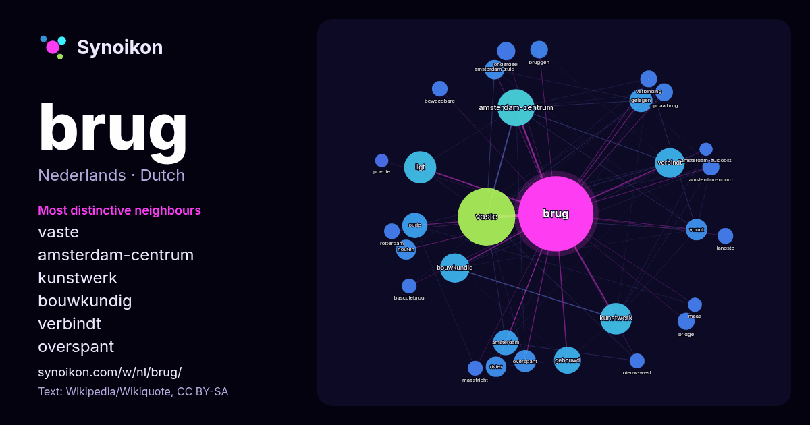

Nederlands · lijst met woorden van de dag
brug
“bridge” · De woorden rond dit woord in 1204 voorkomens uit Wikipedia, Wikiquote.

Meest kenmerkende buren
- vaste 109×
- amsterdam-centrum 62×
- kunstwerk 42×
- bouwkundig 39×
- verbindt 36×
- overspant 23×
- amsterdam-zuid 18×
- vormt 16×
- houten 15×
- ophaalbrug 15×
- gebouwd 15×
- ligt 14×
- amsterdam-noord 14×
- amsterdam 14×
- bruggen 13×
- bridge 13×
- oude 13×
- gelegen 12×
- rivier 12×
- beweegbare 12×
× = hoeveel keer vaker dan in gewone Wikipedia-tekst.
Meest voorkomende buren
- vaste 150
- amsterdam-centrum 62
- ligt 47
- kunstwerk 45
- verbindt 40
- bouwkundig 39
- gebouwd 33
- stad 30
- amsterdam 29
- nieuwe 29
- oude 29
- nederlandse 27
- gelegen 24
- naam 24
- overspant 22
- vormt 21
- meter 19
- rivier 19
- houten 18
- amsterdam-zuid 17
In context
- Brug kan verwijzen naar: Brug (bouwwerk), kunstmatige weg over een diepte Natuurlijke brug, een op natuurlijke wijze ontstane brug in het landschap Verder: Wikipedia snippets · Brug
- Een brug is een bouwwerk of constructie als vaste of beweegbare verbinding voor het verkeer over een obstakel zonder de doorgang onder de verbinding te Wikipedia snippets · Brug (bouwwerk)
- en Zweden. George Rothne ontwierp de brug en het ingenieursbureau Arup tekende het constructief ontwerp van de brug. De Sontbrug vormt de verbinding tussen Wikipedia snippets · Sontbrug (Kopenhagen - Malmö)
- De Romeinse brug van Maastricht was een brug die omstreeks of kort na het midden van de eerste eeuw na Chr. door de Romeinen gebouwd werd over de rivier Wikipedia snippets · Romeinse brug van Maastricht
- kanten van de brug over dienstwoningen. De brug stond meestal open doordat er meer scheepvaartverkeer dan treinverkeer plaats vond en de brug voor de scheepvaart Wikipedia snippets · Hembrug (brug)
- oude brug (Maastrichts: aw brögk), is een van oorsprong 13e-eeuwse stenen boogbrug over de rivier de Maas in de Nederlandse stad Maastricht. De brug is Wikipedia snippets · Sint Servaasbrug
- Sleeuwijk. De doorvaarthoogte is NAP + 13,3 m. Aan de noordzijde is in de brug een basculebrug opgenomen, waarvan de wijdte 30 meter bedraagt en de hoogte Wikipedia snippets · Merwedebrug (Boven-Merwede)
- de brug was te laag. De oude brug noteerde jarenlang hoog in de fileberichten. Daarom werd besloten een nieuwe brug te bouwen naast de oude brug en de Wikipedia snippets · Tacitusbrug
Meer woorden
Vooraf berekend op 2026-10-09 met standaardinstellingen (±5 woorden, middelgroot corpus). De interactieve kaart kan het met live gegevens vernieuwen.
Machinaal vertaalde interface; correcties welkom.